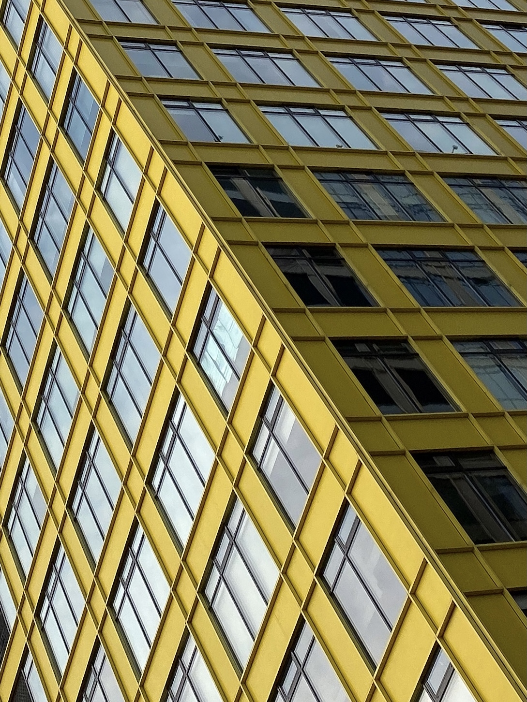
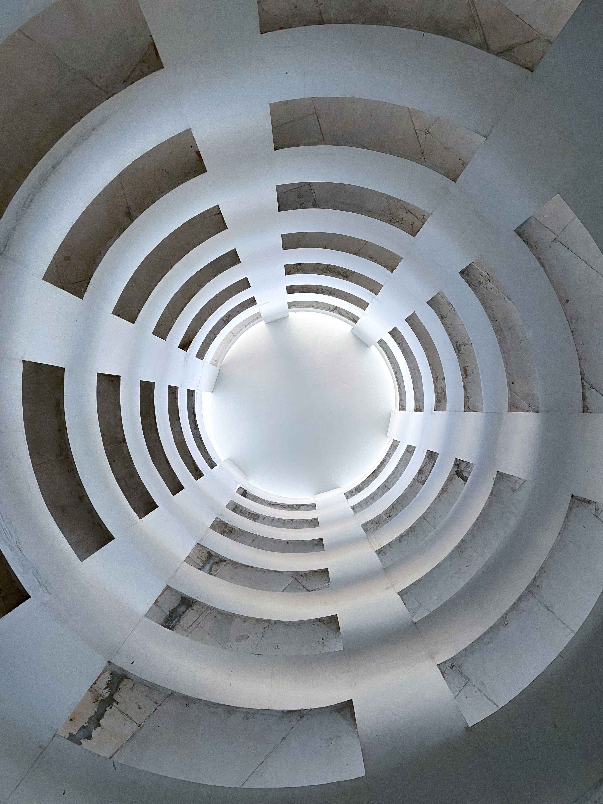

Сайт-визитка
Знакомство
Обо мне
Мне 26 лет и на данный момент времени я обучаюсь программированию в школе Elbrus bootcamp. Как я здесь оказался? Наверно как и многие другие пришел за новой жизнью в надежде осуществить свои мечты и достичь новых горизонтов. Ранее я работал на позиции тимлида и персонального менеджера в инвестиционной среде и обслуживал премиальных клиентов в компании Тинькофф Инвестиции. Я достиг немалых высот в этой сфере для своего возраста, но внутри всегда сидела мысль что я занимаюсь не тем, чем должен. Все случилось так как должно было случится, в итоге я здесь чему безумно рад. Помимо проф. деятельности я занимаюсь спортом, у меня две собаки и я мягко говоря увлекаюсь фото, немного веду инстаграмм а так же увлекаюсь музыкой, надеюсь что в дальнейшем у меня будет больше времени для всего этого. Чуть ниже я поделюсь своими фотографиями.
Портфолио



Контакты